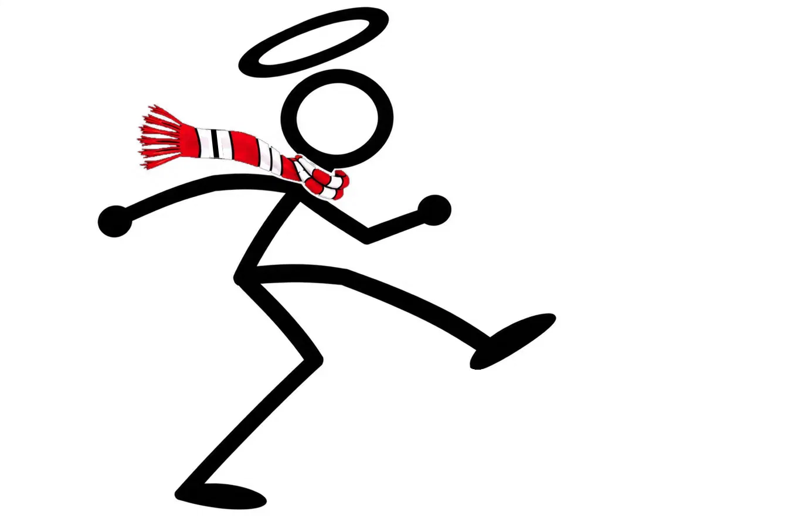

Thoughts from the walk home.
Saintly Ponderings is where Philip Saint writes about football, the people around it, and whatever else comes up on the way back from the ground.

Match ReportsSunderland 1 – 0 Chelsea

Behind at half-time, level on the hour, and then a header from the one player who hadn't scored all season.
A goalless draw that was better than it sounds
No goals, two disallowed, and a second half played almost entirely in their box.
3–0 away, and a long coach ride home
What went wrong in the first twenty minutes, and why the travelling end sang anyway.
News & Politics
What the new ticket prices mean for season ticket holders
The numbers behind this year's rise, and who ends up paying most of it.
Who owns the club, and why fans should care
A plain guide to the ownership structure, and the questions supporters' groups keep asking.
The council vote on match-day parking
What's being proposed, who it affects, and how to have your say before the deadline.
Musings
What the 89th minute teaches you about patience
Nothing has happened for an hour and a half, and still nobody leaves. A short piece on waiting for things that might not come.
The same scarf, twenty seasons later
On the objects we keep for luck, long after we stop believing they work.
Walking home after a loss
The quietest crowd you'll ever be part of, and why it's still worth being in it.

Most of what I write starts somewhere in the stands.
About Saintly Ponderings
Saintly Ponderings is Philip Saint's place for writing that doesn't fit in a post or a group chat. Some of it is about football. Most of it starts there and ends up somewhere else.
Pieces come out when they're ready, not on a schedule. Readers write back, argue, and share their own stories, and the best of those find their way into what comes next.